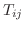
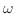
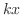
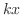
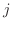
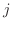

Next: Other Types of Waves Up: Miller Puckette Previous: Derivation of the Non-Piezoelectric
The Non-piezoelectric Wave Equation (1.1.9) is in fact a system of 3 equations, for .
A possible solution to this equation could be a harmonic plane wave propagating forward in the positive x direction[3, p. 12]:
Harmonic solutions to the wave equation (1.1.9) consist of a complex exponential
, wherein the term denotes the imaginary number,
. This notation visually differentiates it from the index . The term  denotes Euler's number, or
, whose
denotes Euler's number, or
, whose  -intercept is 1.
-intercept is 1.
Equation (1.2.1) uses the parameter to refer to the angular frequency of the wave. If  is the frequency of the wave in cycles / second,
, so simply counts the rotations (over time) in terms of .  is the wave number, essentially the spatial analogue of . By convention, for forward-traveling waves, the term is negative, whereas for backward-traveling waves, the sign is reversed. The  operator extracts the real component from a complex-valued
is the wave number, essentially the spatial analogue of . By convention, for forward-traveling waves, the term is negative, whereas for backward-traveling waves, the sign is reversed. The  operator extracts the real component from a complex-valued  . [3,18,7]
. [3,18,7]
Notice also how the wave function in equation (1.2.1) describes variations in the  ,
,  and
and  components of the  vector, which represents particle displacement. These components , and are amplitudes of the wave along each axis. Since the wave function maintains the same phase relationships across these axes, and the only variation is amplitude, the surfaces of constant phase are planes, orthogonal to the propagation vector, which is in this case a unit vector in the
components of the  vector, which represents particle displacement. These components , and are amplitudes of the wave along each axis. Since the wave function maintains the same phase relationships across these axes, and the only variation is amplitude, the surfaces of constant phase are planes, orthogonal to the propagation vector, which is in this case a unit vector in the  direction.
direction.
Consider if the only non-zero component in the vector were . This would mean that the harmonic variation in particle displacement would only occur in the direction of the wave propagation. The wave motion would be expressed solely as a periodic compression and extension of the particle lattice. Such waves are called longitudinal waves. Conversely, if the only non-zero component in the vector were either one of the components perpendicular to the direction of wave propagation, i.e., or in the case of equation (1.2.1), the motion would be called a shear wave. This is analogous to the formalization posed in the discussions in 1.1 surrounding the definitions of stress and strain tensors. In the simplest case of a non-piezoelectric, isotropic solid, all waves can be considered a combination of longitudinal and shear plane waves. [18, p. 15]
Since, in equation (1.2.1), the values , ,  , and
, and  , which multiply , are real-valued, the exponential
is complex. It can be stated in terms of its real and imaginary components separately as[7, p. 5]:
, which multiply , are real-valued, the exponential
is complex. It can be stated in terms of its real and imaginary components separately as[7, p. 5]:
In order to make a physical measurement, we must ultimately extract the real component. To do this, we must subtract the imaginary component from the complex exponential function.
It is often convenient to consider cases of wave motion wherein the material responds in a linear way to perturbations, e.g. for small values of  ,
,  and . This is precisely the approximation implied by Hooke's Law, as invoked in section 1.1. The superposition principle states that any solution to the wave equation, (1.1.9), can be described as a sum of harmonic solutions, of the form
. This means a thorough consideration of the harmonic case is sufficient to provide a generalized account, provided the restrictions imposed by linearity are obeyed.[7, p. 5] Thus, we must assume the real-valued measurements of wave behavior to be the linear superposition of two complex exponential functions, with their imaginary components inverted. The physical meaning of this is to form any solution to the wave equation as a superposition of pairs propagating sinusoids, which travel in opposite directions. This is known as D'Alembert'
s
solution to the wave equation. We will use it many times.[7, p. 119]
and . This is precisely the approximation implied by Hooke's Law, as invoked in section 1.1. The superposition principle states that any solution to the wave equation, (1.1.9), can be described as a sum of harmonic solutions, of the form
. This means a thorough consideration of the harmonic case is sufficient to provide a generalized account, provided the restrictions imposed by linearity are obeyed.[7, p. 5] Thus, we must assume the real-valued measurements of wave behavior to be the linear superposition of two complex exponential functions, with their imaginary components inverted. The physical meaning of this is to form any solution to the wave equation as a superposition of pairs propagating sinusoids, which travel in opposite directions. This is known as D'Alembert'
s
solution to the wave equation. We will use it many times.[7, p. 119]
Since
 and
, it is possible to rewrite equation (1.2.1) into the dispersion relation for a longitudinal wave[3, p. 20]:
and
, it is possible to rewrite equation (1.2.1) into the dispersion relation for a longitudinal wave[3, p. 20]:
 : the speed at which a surface of constant phase propagates through the material. Recall, in the longitudinal plane wave case we began developing in equation (1.2.1), the surface is a plane, and the direction of particulate displacement of the wave is collinear to the vector of wave propagation. The term , known as the phase velocity of a wave, describes the velocity with which those surfaces propagate through the material. The formula for in any dimension
: the speed at which a surface of constant phase propagates through the material. Recall, in the longitudinal plane wave case we began developing in equation (1.2.1), the surface is a plane, and the direction of particulate displacement of the wave is collinear to the vector of wave propagation. The term , known as the phase velocity of a wave, describes the velocity with which those surfaces propagate through the material. The formula for in any dimension
When the elasticity coefficient  is complex, it can represent energy losses in the wave equation due to viscous forces between neighboring particles. This is a major source of attenuation in waves as they propagate through solids and liquids, although it is not the only one. The stresses due to viscosity on a plane wave are[18, p. 8][3, p. 21]:
is complex, it can represent energy losses in the wave equation due to viscous forces between neighboring particles. This is a major source of attenuation in waves as they propagate through solids and liquids, although it is not the only one. The stresses due to viscosity on a plane wave are[18, p. 8][3, p. 21]:
The term has been introduced above to refer to the coefficient of viscosity.1.4 N.B. is a tensor with the same symmetries as . The viscous stresses affect the total stresses  in the following way:
in the following way:
This permits us to describe both elasticity and damping with a single complex variable. We now apply this development from equation (1.2.5) to the Non-piezoelectric Wave Equation (1.1.9):
, angular frequency , density
Another way to look at complex coefficients of elasticity is in terms of energy. Recall in section 1.1 that we defined instantaneous values for the kinetic and potential energy per unit volume, in equations (1.1.10) and (1.1.11), respectively. For a periodic wave, the average kinetic energy is given by[18, p. 7]:
 , is
, is
 . If is real, the propagation is lossless, and the power is real. If is complex, then so is , but of course we only take the real component. Thus power (and therefore energy) is conserved, albeit in a complex form.[18, p. 8] Yet another way to describe this loss is in terms of impedance, which will be explored in section 1.4.
. If is real, the propagation is lossless, and the power is real. If is complex, then so is , but of course we only take the real component. Thus power (and therefore energy) is conserved, albeit in a complex form.[18, p. 8] Yet another way to describe this loss is in terms of impedance, which will be explored in section 1.4.
joe 2014-01-09